<!DOCTYPE lake>
<p data-lake-id="u261fa1d2" id="u261fa1d2" style="text-align: center"><br/></p><a class="yuque-card-link" href="https://player.bilibili.com/player.html?bvid=BV1L7CrYREYb&amp;p=2&amp;page=2&amp;autoplay=0" rel="noopener noreferrer" target="_blank">thirdparty：thirdparty</a><p data-lake-id="ucf216882" id="ucf216882" style="text-align: center">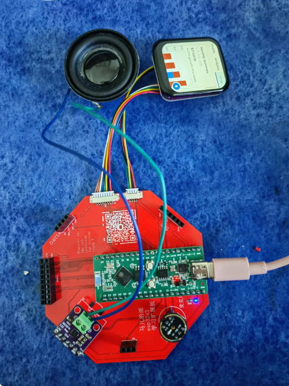</p><p data-lake-id="u4ba80354" id="u4ba80354"><span data-lake-id="u151eee4a" id="u151eee4a">参考文档：</span><a data-lake-id="u67590fc8" href="http://icheima.com" id="u67590fc8" rel="noopener noreferrer" target="_blank"><span data-lake-id="u98f94aba" id="u98f94aba">http://icheima.com</span></a></p><p data-lake-id="u36ff2d35" id="u36ff2d35"><br/></p><p data-lake-id="u1af4818e" id="u1af4818e"><strong><span data-lake-id="ud7df137e" id="ud7df137e">小智官方资料：</span></strong></p><p data-lake-id="u838056c8" id="u838056c8"><span data-lake-id="u0b67723a" id="u0b67723a">源代码：</span></p><p data-lake-id="u8a7ec8d5" id="u8a7ec8d5"><a data-lake-id="ua31d9a33" href="https://github.com/78/xiaozhi-esp32/tree/v1.1.0" id="ua31d9a33" rel="noopener noreferrer" target="_blank"><strong><span data-lake-id="u6e336148" id="u6e336148">https://github.com/78/xiaozhi-esp32/</span></strong></a></p><p data-lake-id="ue07f4bb9" id="ue07f4bb9"><span data-lake-id="uce00c913" id="uce00c913">小智官网：</span></p><p data-lake-id="ud36fccee" id="ud36fccee"><span data-lake-id="u2bb231c7" id="u2bb231c7">​</span><a data-lake-id="uf0fd29f2" href="https://xiaozhi.me/" id="uf0fd29f2" rel="noopener noreferrer" target="_blank"><span data-lake-id="uc248df7c" id="uc248df7c">https://xiaozhi.me/</span></a></p><p data-lake-id="ud2325074" id="ud2325074"><span data-lake-id="u424fa377" id="u424fa377">Windows搭建 ESP IDF 5.3.2开发环境以及编译小智：</span><a data-lake-id="u491dd8f9" href="https://icnynnzcwou8.feishu.cn/wiki/JEYDwTTALi5s2zkGlFGcDiRknXf" id="u491dd8f9" rel="noopener noreferrer" target="_blank"><span data-lake-id="ubf708297" id="ubf708297">https://icnynnzcwou8.feishu.cn/wiki/JEYDwTTALi5s2zkGlFGcDiRknXf</span></a></p><p data-lake-id="uaae1b71f" id="uaae1b71f"><span data-lake-id="u19dc3493" id="u19dc3493">小智AI终端最新版本固件下载：</span></p><p data-lake-id="ub139a648" id="ub139a648"><a data-lake-id="u99d242b9" href="https://ccnphfhqs21z.feishu.cn/wiki/W14Kw1s1uieoKjkP8N0c1VVvn8d" id="u99d242b9" rel="noopener noreferrer" target="_blank"><span data-lake-id="u17989bce" id="u17989bce">https://ccnphfhqs21z.feishu.cn/wiki/W14Kw1s1uieoKjkP8N0c1VVvn8d</span></a></p><p data-lake-id="uc5cff055" id="uc5cff055"><span data-lake-id="ua86a812b" id="ua86a812b">小智 AI 聊天机器人百科全书：</span></p><p data-lake-id="u3c8d62af" id="u3c8d62af"><a data-lake-id="u23ccdcdd" href="https://ccnphfhqs21z.feishu.cn/wiki/F5krwD16viZoF0kKkvDcrZNYnhb" id="u23ccdcdd" rel="noopener noreferrer" target="_blank"><span data-lake-id="u4946d431" id="u4946d431">https://ccnphfhqs21z.feishu.cn/wiki/F5krwD16viZoF0kKkvDcrZNYnhb</span></a></p><p data-lake-id="u77a8e093" id="u77a8e093"><span data-lake-id="u63f5c771" id="u63f5c771">​</span><br/></p><a class="yuque-card-link" href="https://www.yuque.com/attachments/yuque/0/2025/pdf/27903758/1742459844166-3c54ec9f-e65c-4cdd-8a6c-652468460b51.pdf">localdoc：SCH_ESP32_S3_AI音箱板原理图.pdf</a><p data-lake-id="u0c850e77" id="u0c850e77"><br/></p><h2 data-lake-id="Opkj0" data-lake-index-type="2" id="Opkj0"><span data-lake-id="ucd231195" id="ucd231195">下载源代码</span></h2><span class="yuque-card-unsupported">[codeblock]</span><h2 data-lake-id="jCBta" data-lake-index-type="2" id="jCBta"><span data-lake-id="u7f765fd2" id="u7f765fd2">修改引脚</span></h2><p data-lake-id="u0d4fcd22" id="u0d4fcd22"><span data-lake-id="u81c1c6c9" id="u81c1c6c9">打开boards/bread-compact-wifi-lcd/config.h,将引脚修改为自己的引脚</span></p><h3 data-lake-id="KUe6A" data-lake-index-type="2" id="KUe6A"><span data-lake-id="u20ed43a5" id="u20ed43a5">修改麦克风和功放引脚</span></h3><p data-lake-id="u10423eac" id="u10423eac">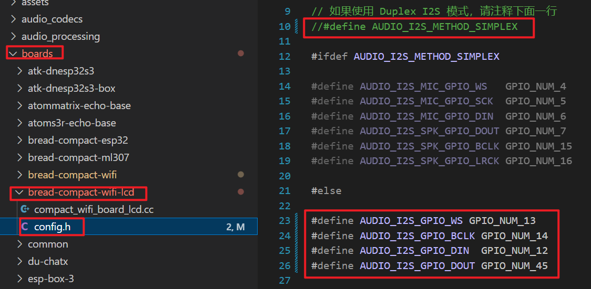</p><span class="yuque-card-unsupported">[codeblock]</span><p data-lake-id="uadbc65a2" id="uadbc65a2"><span data-lake-id="u6c13696e" id="u6c13696e">将音频输入数据采样率改为24000</span></p><span class="yuque-card-unsupported">[codeblock]</span><h3 data-lake-id="PXQcw" data-lake-index-type="2" id="PXQcw"><span data-lake-id="u8f71d3e7" id="u8f71d3e7">修改屏幕引脚</span></h3><span class="yuque-card-unsupported">[codeblock]</span><p data-lake-id="uc3906a04" id="uc3906a04"><br/></p><h2 data-lake-id="Y1rzi" data-lake-index-type="2" id="Y1rzi"><span data-lake-id="u372df2bf" id="u372df2bf">修改芯片为esp32s3</span></h2><p data-lake-id="u5ce80094" id="u5ce80094">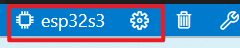</p><h2 data-lake-id="yeykY" data-lake-index-type="2" id="yeykY"><span data-lake-id="u55d25ce0" id="u55d25ce0">修改menuconfig</span></h2><p data-lake-id="u55dadfca" id="u55dadfca"><span data-lake-id="u01131266" id="u01131266">单击小齿轮设置按钮</span></p><ol list="ueb0c0513"><li data-lake-id="u0507b37b" fid="u6d99f222" id="u0507b37b"><span data-lake-id="uc3337b99" id="uc3337b99">选择Xiaozhi Assistant</span></li><li data-lake-id="u4c2568e5" fid="u6d99f222" id="u4c2568e5"><span data-lake-id="uc6306e98" id="uc6306e98">选择Board Type为</span><strong><span data-lake-id="u8f72a264" id="u8f72a264">面包板新版接线（WIFI）+LCD</span></strong></li><li data-lake-id="ufd88eb59" fid="u6d99f222" id="ufd88eb59"><span data-lake-id="u041f8f49" id="u041f8f49">选择LCD TYPE:</span><strong><span data-lake-id="u9d92d580" id="u9d92d580"> ST7789,分辨率240*280</span></strong></li></ol><p data-lake-id="u4c5bb420" id="u4c5bb420">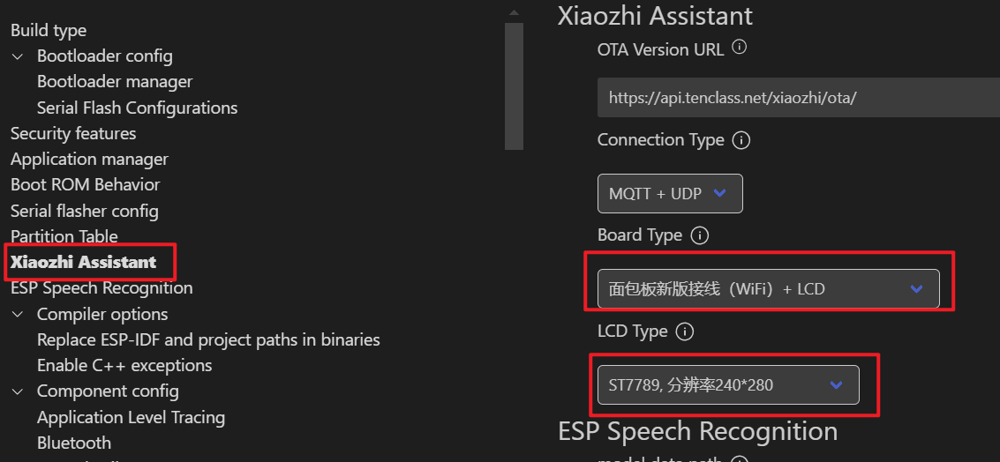</p><h2 data-lake-id="HrUWP" data-lake-index-type="2" id="HrUWP"><span data-lake-id="u511bcbe2" id="u511bcbe2">连接小智热点</span></h2><ol list="uf613c868"><li data-lake-id="u69b8b321" fid="u20929f91" id="u69b8b321"><span data-lake-id="u8834c729" id="u8834c729">连接包含xiaozhi名称的wifi热点</span></li><li data-lake-id="u98607478" fid="u20929f91" id="u98607478"><span data-lake-id="u178972b3" id="u178972b3">打开192.168.4.1网址</span></li><li data-lake-id="u25d9d5c1" fid="u20929f91" id="u25d9d5c1"><span data-lake-id="ub924ac97" id="ub924ac97">输入你家路由器或手机热点的账号密码</span></li><li data-lake-id="u6db7681a" fid="u20929f91" id="u6db7681a"><span data-lake-id="u5165cc8c" id="u5165cc8c">连接成功之后，它会播放6位数的验证码，</span><strong><span data-lake-id="uf38c1955" id="uf38c1955">要仔细听，记住它</span></strong></li></ol><p data-lake-id="uf877493e" id="uf877493e"><br/></p><h2 data-lake-id="EGQSh" data-lake-index-type="2" id="EGQSh"><span data-lake-id="u7e35943a" id="u7e35943a">后台管理</span></h2><ol list="u554d0e11"><li data-lake-id="ubec666ae" fid="u1a103a32" id="ubec666ae"><span data-lake-id="ud0801097" id="ud0801097">打开小智后台管理：</span><a data-lake-id="u50ce92b4" href="https://xiaozhi.me/" id="u50ce92b4" rel="noopener noreferrer" target="_blank"><span data-lake-id="u5689f4a6" id="u5689f4a6">https://xiaozhi.me/</span></a><span data-lake-id="uade553f3" id="uade553f3"> </span></li></ol><p data-lake-id="u32feac8c" id="u32feac8c">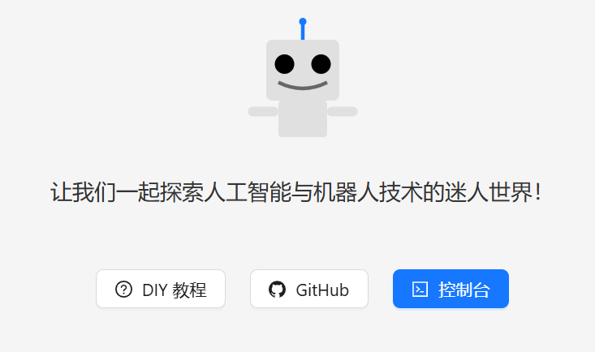</p><ol list="u554d0e11" start="2"><li data-lake-id="u1a87e3c3" fid="u1a103a32" id="u1a87e3c3"><span data-lake-id="u7b7855ad" id="u7b7855ad">单击控制台</span></li></ol><p data-lake-id="u827dd2bb" id="u827dd2bb">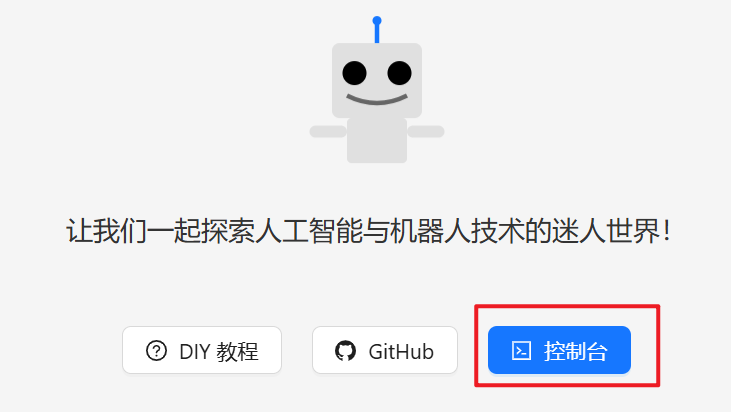</p><p data-lake-id="uced0fd2b" id="uced0fd2b">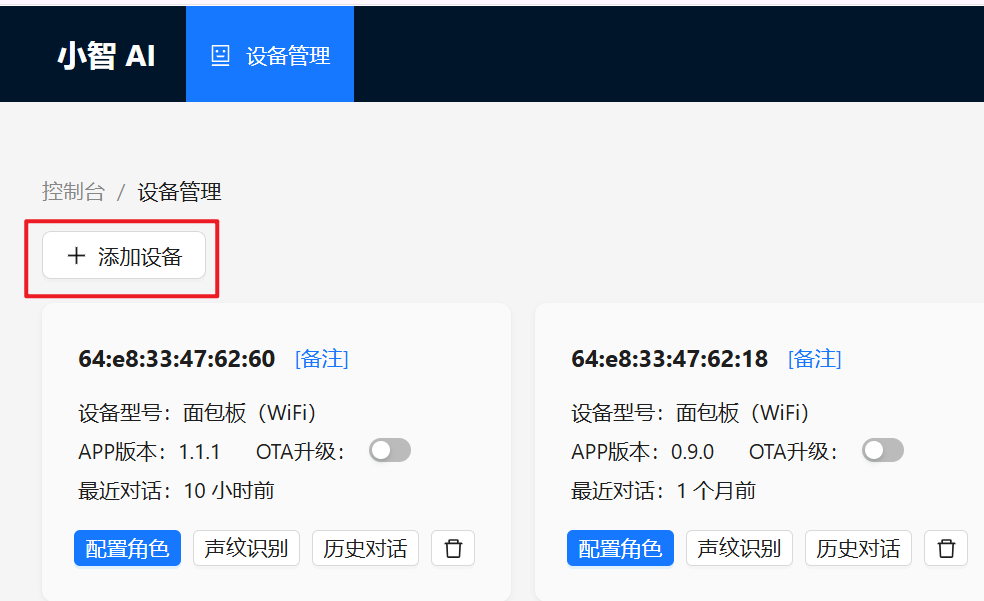</p><p data-lake-id="ud93f022e" id="ud93f022e"><br/></p><ol list="u554d0e11" start="3"><li data-lake-id="u38fb6512" fid="u1a103a32" id="u38fb6512"><span data-lake-id="u78a190e6" id="u78a190e6">将上一个步骤听到的验证码填进去</span></li></ol><p data-lake-id="u4b511d04" id="u4b511d04">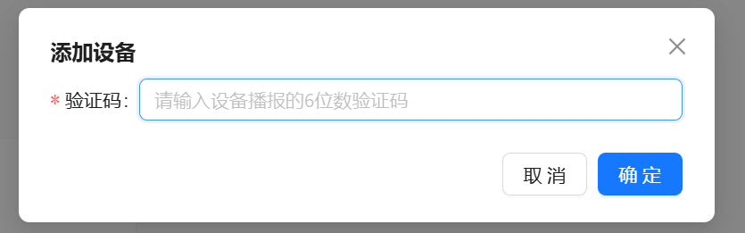</p><h2 data-lake-id="fOj4q" data-lake-index-type="2" id="fOj4q"><span data-lake-id="u875aae1b" id="u875aae1b">开始唠嗑</span></h2><ol list="uba38522b"><li data-lake-id="u4e2ef7f8" fid="ue423ed6b" id="u4e2ef7f8"><span data-lake-id="u70998a99" id="u70998a99">单击boot按键，进入聊天模式</span></li><li data-lake-id="uab7e49c2" fid="ue423ed6b" id="uab7e49c2"><span data-lake-id="u002eb7d1" id="u002eb7d1">对着麦克风说: 你好小智</span></li></ol><p data-lake-id="u8d468aad" id="u8d468aad"><br/></p><h2 data-lake-id="J5Xt5" data-lake-index-type="2" id="J5Xt5"><span data-lake-id="ua5038d2d" id="ua5038d2d">命令打包bin固件</span></h2><p data-lake-id="u1f7a7745" id="u1f7a7745"><br/></p><p data-lake-id="ua1d2a1cc" id="ua1d2a1cc"><span data-lake-id="ucc70be90" id="ucc70be90">要将多个 </span><code data-lake-id="uc3c6f20d" id="uc3c6f20d"><span data-lake-id="udbeb97ee" id="udbeb97ee">.bin</span></code><span data-lake-id="u5996357f" id="u5996357f"> 文件合并成一个单一的 </span><code data-lake-id="u92718f36" id="u92718f36"><span data-lake-id="u91bc72d8" id="u91bc72d8">.bin</span></code><span data-lake-id="u509e7163" id="u509e7163"> 文件，可以使用 </span><code data-lake-id="u45ed2633" id="u45ed2633"><span data-lake-id="u085821b1" id="u085821b1">esptool.py</span></code><span data-lake-id="u3f8fb316" id="u3f8fb316"> 提供的 </span><code data-lake-id="u5951b52a" id="u5951b52a"><span data-lake-id="uc9c95865" id="uc9c95865">merge_bin</span></code><span data-lake-id="u0d21d7be" id="u0d21d7be"> 功能。该功能允许你将多个二进制文件按照指定的地址偏移打包成一个统一的 </span><code data-lake-id="ucb50a0dd" id="ucb50a0dd"><span data-lake-id="uf9bfc15f" id="uf9bfc15f">.bin</span></code><span data-lake-id="u2821b05a" id="u2821b05a"> 文件，方便一次性烧录。</span></p><p data-lake-id="u8f93b495" id="u8f93b495"><span data-lake-id="u893c5b27" id="u893c5b27">以下是根据你的烧录命令生成的 </span><code data-lake-id="u57e765d6" id="u57e765d6"><span data-lake-id="u3cf8f927" id="u3cf8f927">merge_bin</span></code><span data-lake-id="u64dd437b" id="u64dd437b"> 命令：</span></p><hr/><h3 data-lake-id="7edd18d6" data-lake-index-type="2" id="7edd18d6"><strong><span data-lake-id="u5d662a31" id="u5d662a31">合并命令</span></strong></h3><ul list="uf0aad4bd"><li data-lake-id="ue3828f95" fid="u018e43b7" id="ue3828f95"><span data-lake-id="u095996b3" id="u095996b3">powershell</span></li></ul><span class="yuque-card-unsupported">[codeblock]</span><ul list="u732b6e67"><li data-lake-id="ufdaac8e9" fid="ufcccd089" id="ufdaac8e9"><span data-lake-id="u8a640ab3" id="u8a640ab3">cmd</span></li></ul><span class="yuque-card-unsupported">[codeblock]</span><hr/><h3 data-lake-id="9de6d284" data-lake-index-type="2" id="9de6d284"><strong><span data-lake-id="u1fd09850" id="u1fd09850">命令参数说明</span></strong></h3><ol list="u0ea8196c"><li data-lake-id="u0710c06c" fid="u673c300a" id="u0710c06c"><code data-lake-id="u306c93c6" id="u306c93c6"><strong><span data-lake-id="uc1dd7b8e" id="uc1dd7b8e">--chip esp32s3</span></strong></code><span data-lake-id="u2c24b59c" id="u2c24b59c">:</span></li></ol><ul data-lake-indent="1" list="ueee6291a"><li data-lake-id="u8496ed25" fid="ucb985c95" id="u8496ed25"><span data-lake-id="uebb41828" id="uebb41828">指定目标芯片为 </span><code data-lake-id="u4e015a23" id="u4e015a23"><span data-lake-id="ub80d4fac" id="ub80d4fac">ESP32-S3</span></code><span data-lake-id="u0bc34f58" id="u0bc34f58">。</span></li></ul><ol list="u0ea8196c" start="2"><li data-lake-id="u89e74ee2" fid="u673c300a" id="u89e74ee2"><code data-lake-id="ua2eca3f2" id="ua2eca3f2"><strong><span data-lake-id="udf27b91b" id="udf27b91b">merge_bin</span></strong></code><span data-lake-id="u411976a8" id="u411976a8">:</span></li></ol><ul data-lake-indent="1" list="u3f98885f"><li data-lake-id="u9b056937" fid="u28571ae5" id="u9b056937"><span data-lake-id="u9ae5baa1" id="u9ae5baa1">使用 </span><code data-lake-id="u5d886799" id="u5d886799"><span data-lake-id="ub2e9bf06" id="ub2e9bf06">esptool.py</span></code><span data-lake-id="u32ef4e0c" id="u32ef4e0c"> 的合并功能。</span></li></ul><ol list="u0ea8196c" start="3"><li data-lake-id="u877ea31e" fid="u673c300a" id="u877ea31e"><code data-lake-id="u0689185e" id="u0689185e"><strong><span data-lake-id="u226d991f" id="u226d991f">--output merged_firmware.bin</span></strong></code><span data-lake-id="ua03d0335" id="ua03d0335">:</span></li></ol><ul data-lake-indent="1" list="u3050c224"><li data-lake-id="u960618a4" fid="uf3807a09" id="u960618a4"><span data-lake-id="uc0d71edc" id="uc0d71edc">输出合并后的单一 </span><code data-lake-id="ue699f882" id="ue699f882"><span data-lake-id="u97dcc871" id="u97dcc871">.bin</span></code><span data-lake-id="u33c66a1d" id="u33c66a1d"> 文件，命名为 </span><code data-lake-id="u861ec9e1" id="u861ec9e1"><span data-lake-id="u3e1914e4" id="u3e1914e4">merged_firmware.bin</span></code><span data-lake-id="u126a094e" id="u126a094e">。</span></li></ul><ol list="u0ea8196c" start="4"><li data-lake-id="ucf7f942f" fid="u673c300a" id="ucf7f942f"><code data-lake-id="u81754998" id="u81754998"><strong><span data-lake-id="u95585a0c" id="u95585a0c">--flash_mode dio</span></strong></code><span data-lake-id="u1ea0297c" id="u1ea0297c">:</span></li></ol><ul data-lake-indent="1" list="u9746b690"><li data-lake-id="u8b80a656" fid="uabd3328d" id="u8b80a656"><span data-lake-id="ud4718a92" id="ud4718a92">指定 Flash 模式为 </span><code data-lake-id="ua633ec2d" id="ua633ec2d"><span data-lake-id="u803c780e" id="u803c780e">DIO</span></code><span data-lake-id="u0ecd813d" id="u0ecd813d">（双线模式）。</span></li></ul><ol list="u0ea8196c" start="5"><li data-lake-id="uad5c2032" fid="u673c300a" id="uad5c2032"><code data-lake-id="ua5e59988" id="ua5e59988"><strong><span data-lake-id="ud50e83ba" id="ud50e83ba">--flash_size 16MB</span></strong></code><span data-lake-id="u3efc1ef0" id="u3efc1ef0">:</span></li></ol><ul data-lake-indent="1" list="u9f38150c"><li data-lake-id="u37129b6f" fid="uec41d8ca" id="u37129b6f"><span data-lake-id="ud39ae516" id="ud39ae516">指定 Flash 大小为 </span><code data-lake-id="u34d06a03" id="u34d06a03"><span data-lake-id="u92c57892" id="u92c57892">16MB</span></code><span data-lake-id="u088ea96b" id="u088ea96b">。</span></li></ul><ol list="u0ea8196c" start="6"><li data-lake-id="u39fc0d76" fid="u673c300a" id="u39fc0d76"><code data-lake-id="u86061513" id="u86061513"><strong><span data-lake-id="u08f7eb12" id="u08f7eb12">--flash_freq 80m</span></strong></code><span data-lake-id="uca3293d6" id="uca3293d6">:</span></li></ol><ul data-lake-indent="1" list="ud3e4ddbc"><li data-lake-id="u25524d93" fid="u6c91c324" id="u25524d93"><span data-lake-id="ue7fdeb9e" id="ue7fdeb9e">指定 Flash 频率为 </span><code data-lake-id="u098a92ae" id="u098a92ae"><span data-lake-id="ue437f99e" id="ue437f99e">80MHz</span></code><span data-lake-id="u2eccbc4c" id="u2eccbc4c">。</span></li></ul><ol list="u0ea8196c" start="7"><li data-lake-id="ub2d62318" fid="u673c300a" id="ub2d62318"><strong><span data-lake-id="u5de9d3b7" id="u5de9d3b7">地址和文件列表</span></strong><span data-lake-id="u9500ab3c" id="u9500ab3c">:</span></li></ol><ul data-lake-indent="1" list="u5fa4ff81"><li data-lake-id="uf018d251" fid="uc4a83f19" id="uf018d251"><span data-lake-id="u43e32ed5" id="u43e32ed5">每个文件后面都跟上其对应的烧录地址：</span></li></ul><ul data-lake-indent="2" list="u5fa4ff81"><li data-lake-id="u3ee0fbcf" fid="ub53ea400" id="u3ee0fbcf"><code data-lake-id="u54fdc7cf" id="u54fdc7cf"><span data-lake-id="u4e5d137c" id="u4e5d137c">0x0 build\bootloader\bootloader.bin</span></code></li><li data-lake-id="u17ea2300" fid="ub53ea400" id="u17ea2300"><code data-lake-id="u1ba1865c" id="u1ba1865c"><span data-lake-id="u3d1826ea" id="u3d1826ea">0x8000 build\partition_table\partition-table.bin</span></code></li><li data-lake-id="uf3b593f3" fid="ub53ea400" id="uf3b593f3"><code data-lake-id="u64259e5e" id="u64259e5e"><span data-lake-id="u1568ca6b" id="u1568ca6b">0xd000 build\ota_data_initial.bin</span></code></li><li data-lake-id="u5c96bf8e" fid="ub53ea400" id="u5c96bf8e"><code data-lake-id="u8e2bd7a1" id="u8e2bd7a1"><span data-lake-id="u8d107cdd" id="u8d107cdd">0x10000 build\srmodels\srmodels.bin</span></code></li><li data-lake-id="u3f650023" fid="ub53ea400" id="u3f650023"><code data-lake-id="uea0723d4" id="uea0723d4"><span data-lake-id="u8c185d55" id="u8c185d55">0x100000 build\xiaozhi.bin</span></code></li></ul><hr/><h3 data-lake-id="b86f2306" data-lake-index-type="2" id="b86f2306"><strong><span data-lake-id="u8c909b92" id="u8c909b92">输出结果</span></strong></h3><p data-lake-id="u273451ca" id="u273451ca"><span data-lake-id="ue756c04a" id="ue756c04a">执行上述命令后，会生成一个名为 </span><code data-lake-id="u21c2fd6a" id="u21c2fd6a"><span data-lake-id="u02d9c3f6" id="u02d9c3f6">merged_firmware.bin</span></code><span data-lake-id="ue7edb459" id="ue7edb459"> 的文件。这个文件包含了所有输入 </span><code data-lake-id="ubae04564" id="ubae04564"><span data-lake-id="u61fc0ce6" id="u61fc0ce6">.bin</span></code><span data-lake-id="u45da93ea" id="u45da93ea"> 文件的内容，并按照指定的地址偏移进行了合并。</span></p><hr/><h3 data-lake-id="3cd7e4b2" data-lake-index-type="2" id="3cd7e4b2"><strong><span data-lake-id="ub52baa14" id="ub52baa14">烧录合并后的文件</span></strong></h3><p data-lake-id="u40314f3b" id="u40314f3b"><span data-lake-id="uc5482f9b" id="uc5482f9b">生成 </span><code data-lake-id="ubcce7362" id="ubcce7362"><span data-lake-id="u459629a9" id="u459629a9">merged_firmware.bin</span></code><span data-lake-id="ub2192361" id="ub2192361"> 后，可以直接使用以下命令将其烧录到设备中：</span></p><span class="yuque-card-unsupported">[codeblock]</span><hr/><h3 data-lake-id="1bbbb204" data-lake-index-type="2" id="1bbbb204"><strong><span data-lake-id="udc5ebcce" id="udc5ebcce">注意事项</span></strong></h3><ol list="u18e681b9"><li data-lake-id="u3ee67b33" fid="uc748a19d" id="u3ee67b33"><strong><span data-lake-id="u06bd26cc" id="u06bd26cc">文件路径</span></strong><span data-lake-id="ua601d7ab" id="ua601d7ab">:</span></li></ol><ul data-lake-indent="1" list="ua93a7dd7"><li data-lake-id="ua9627c49" fid="u6463c668" id="ua9627c49"><span data-lake-id="ub99b9ba6" id="ub99b9ba6">确保所有输入文件路径正确无误。</span></li><li data-lake-id="u14abcc73" fid="u6463c668" id="u14abcc73"><span data-lake-id="ua4c12232" id="ua4c12232">如果路径中包含空格，请用引号括起来，例如：</span><code data-lake-id="u6c64438c" id="u6c64438c"><span data-lake-id="ue5f25969" id="ue5f25969">"build\partition table\partition-table.bin"</span></code><span data-lake-id="ufe38a31d" id="ufe38a31d">。</span></li></ul><ol list="u18e681b9" start="2"><li data-lake-id="u62e30446" fid="uc748a19d" id="u62e30446"><strong><span data-lake-id="u36ff8d69" id="u36ff8d69">地址对齐</span></strong><span data-lake-id="ud6318aef" id="ud6318aef">:</span></li></ol><ul data-lake-indent="1" list="u80885584"><li data-lake-id="ua09a3a21" fid="u0e0fa274" id="ua09a3a21"><span data-lake-id="u8c90e0b1" id="u8c90e0b1">确保每个文件的地址与原始烧录命令一致，否则可能导致烧录失败或运行异常。</span></li></ul><ol list="u18e681b9" start="3"><li data-lake-id="u83277f90" fid="uc748a19d" id="u83277f90"><strong><span data-lake-id="u54426dc5" id="u54426dc5">Flash 配置</span></strong><span data-lake-id="u576ed6b0" id="u576ed6b0">:</span></li></ol><ul data-lake-indent="1" list="u23a15fa7"><li data-lake-id="ud9d71a27" fid="ucc3255a1" id="ud9d71a27"><span data-lake-id="ub477b0a1" id="ub477b0a1">合并时的 </span><code data-lake-id="u5dcdfbb8" id="u5dcdfbb8"><span data-lake-id="u7f22b1a5" id="u7f22b1a5">--flash_mode</span></code><span data-lake-id="u20d88571" id="u20d88571">、</span><code data-lake-id="uf0f5ea03" id="uf0f5ea03"><span data-lake-id="ue0548054" id="ue0548054">--flash_size</span></code><span data-lake-id="ubcc2fce0" id="ubcc2fce0"> 和 </span><code data-lake-id="u5e75771e" id="u5e75771e"><span data-lake-id="ue0b051c4" id="ue0b051c4">--flash_freq</span></code><span data-lake-id="udb5c9766" id="udb5c9766"> 参数应与烧录命令保持一致。</span></li></ul><ol list="u18e681b9" start="4"><li data-lake-id="u0f099570" fid="uc748a19d" id="u0f099570"><strong><span data-lake-id="uc7cb88e4" id="uc7cb88e4">OTA 分区</span></strong><span data-lake-id="ucb4b15c0" id="ucb4b15c0">:</span></li></ol><ul data-lake-indent="1" list="uf43bc7e6"><li data-lake-id="u4ed7aabf" fid="u51edf0a5" id="u4ed7aabf"><span data-lake-id="ueba605f7" id="ueba605f7">如果项目中有 OTA（Over-The-Air）更新功能，请确保 </span><code data-lake-id="ua181967d" id="ua181967d"><span data-lake-id="u8855c751" id="u8855c751">ota_data_initial.bin</span></code><span data-lake-id="u8ba7b4c5" id="u8ba7b4c5"> 文件正确包含在合并过程中。</span></li></ul><hr/><p data-lake-id="uf7c87562" id="uf7c87562"><span data-lake-id="u7312cc69" id="u7312cc69">通过上述方法，你可以将多个 </span><code data-lake-id="u3bc87878" id="u3bc87878"><span data-lake-id="uec6c9fa7" id="uec6c9fa7">.bin</span></code><span data-lake-id="u38301f43" id="u38301f43"> 文件合并成一个单一的文件，从而简化烧录流程，特别适合需要批量生产的场景。</span></p><p data-lake-id="u87ea577c" id="u87ea577c"><span data-lake-id="u07e2b4dd" id="u07e2b4dd">​</span><br/></p><h2 data-lake-id="yVSJp" data-lake-index-type="2" id="yVSJp"><span data-lake-id="ub1b141aa" id="ub1b141aa">固件编译</span></h2><h3 data-lake-id="hUXxS" data-lake-index-type="2" id="hUXxS"><span data-lake-id="u1c83d74d" id="u1c83d74d">下载源代码</span></h3><p data-lake-id="ud6b01bcb" id="ud6b01bcb"><span data-lake-id="u2881e7fb" id="u2881e7fb">这里以1.7.6为例：</span><a data-lake-id="ue0f50365" href="https://github.com/78/xiaozhi-esp32/releases/tag/v1.7.6" id="ue0f50365" rel="noopener noreferrer" target="_blank"><span data-lake-id="u8b9e37a2" id="u8b9e37a2">https://github.com/78/xiaozhi-esp32/releases/tag/v1.7.6</span></a></p><p data-lake-id="uce121254" id="uce121254"><span data-lake-id="u23844200" id="u23844200">可以点这里直接下载：</span><a class="yuque-card-link" href="../../_assets/67b9d5658e53429183485cfb.zip">xiaozhi-esp32-1.7.6.zip</a></p><h3 data-lake-id="iqPGA" data-lake-index-type="2" id="iqPGA"><span data-lake-id="u9291c0b7" id="u9291c0b7">修改工程配置</span></h3><h4 data-lake-id="oRmk0" data-lake-index-type="2" id="oRmk0"><span data-lake-id="u42aa0dd4" id="u42aa0dd4">修改</span><code data-lake-id="u6c1e88ff" id="u6c1e88ff"><span data-lake-id="u220a434d" id="u220a434d">main/Kconfig.projbuild</span></code></h4><p data-lake-id="u5d315c32" id="u5d315c32"><span data-lake-id="uc82414b6" id="uc82414b6">将如下代码</span></p><span class="yuque-card-unsupported">[codeblock]</span><p data-lake-id="udeca3873" id="udeca3873"><span data-lake-id="u129d276b" id="u129d276b">改为</span></p><span class="yuque-card-unsupported">[codeblock]</span><h4 data-lake-id="ULJ6o" data-lake-index-type="2" id="ULJ6o"><span data-lake-id="u331efb49" id="u331efb49">修改config.h文件</span></h4><p data-lake-id="u258bc733" id="u258bc733"><span data-lake-id="ua5bbb62e" id="ua5bbb62e">打开如下文件：</span><code data-lake-id="u8b9ec666" id="u8b9ec666"><span data-lake-id="uc2a59dfc" id="uc2a59dfc">main/boards/xmini-c3/config.h</span></code><span data-lake-id="ued2ff6ad" id="ued2ff6ad">并将如下内容覆盖进去</span></p><span class="yuque-card-unsupported">[codeblock]</span><h4 data-lake-id="BL3dV" data-lake-index-type="2" id="BL3dV"><span data-lake-id="uceecb247" id="uceecb247">修改board.cc文件</span></h4><p data-lake-id="ucac98ab3" id="ucac98ab3"><span data-lake-id="ufabfc860" id="ufabfc860">注释掉结构体最后一行代码</span></p><span class="yuque-card-unsupported">[codeblock]</span><h3 data-lake-id="dVynm" data-lake-index-type="2" id="dVynm"><span data-lake-id="u3361fd67" id="u3361fd67">设置menuconfig</span></h3><p data-lake-id="ud03a80e9" id="ud03a80e9"><span data-lake-id="ua06d857f" id="ua06d857f">点击左下角SDK配置编辑器</span></p><p data-lake-id="u54769ac1" id="u54769ac1">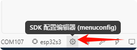</p><p data-lake-id="u22c84d39" id="u22c84d39"><span data-lake-id="ub17ef4b4" id="ub17ef4b4">按照如下步骤选择开发板</span></p><p data-lake-id="uf45ee0f0" id="uf45ee0f0">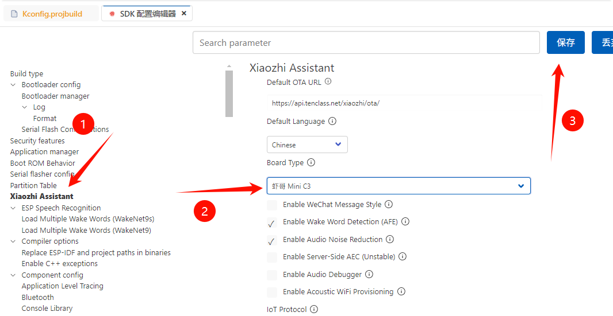</p><p data-lake-id="ufd747504" id="ufd747504"><span data-lake-id="ud7c96b91" id="ud7c96b91">最后编译烧录</span></p><p data-lake-id="ufaed3162" id="ufaed3162">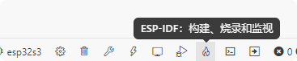</p>